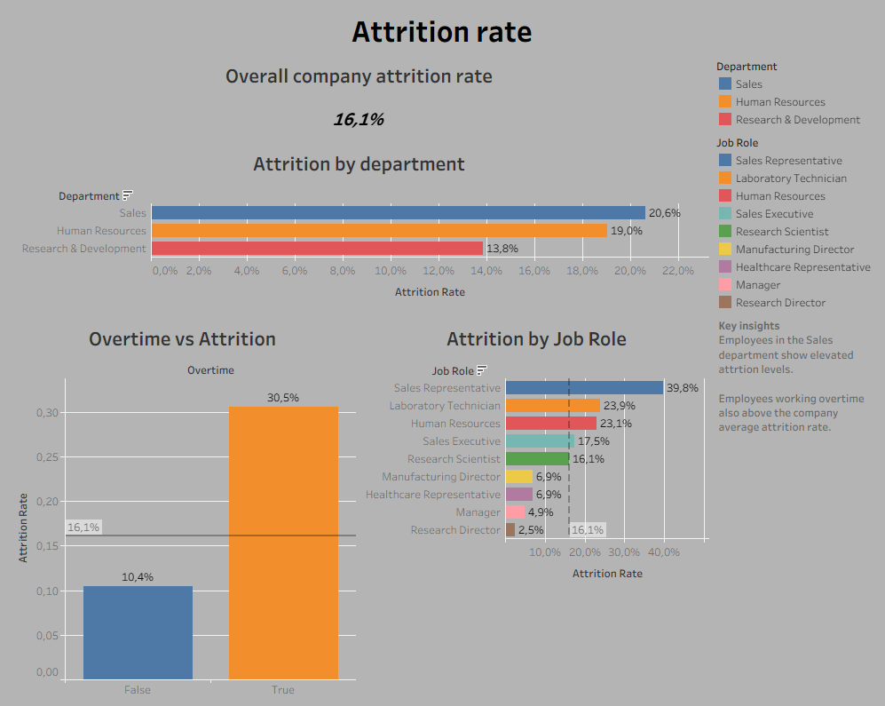
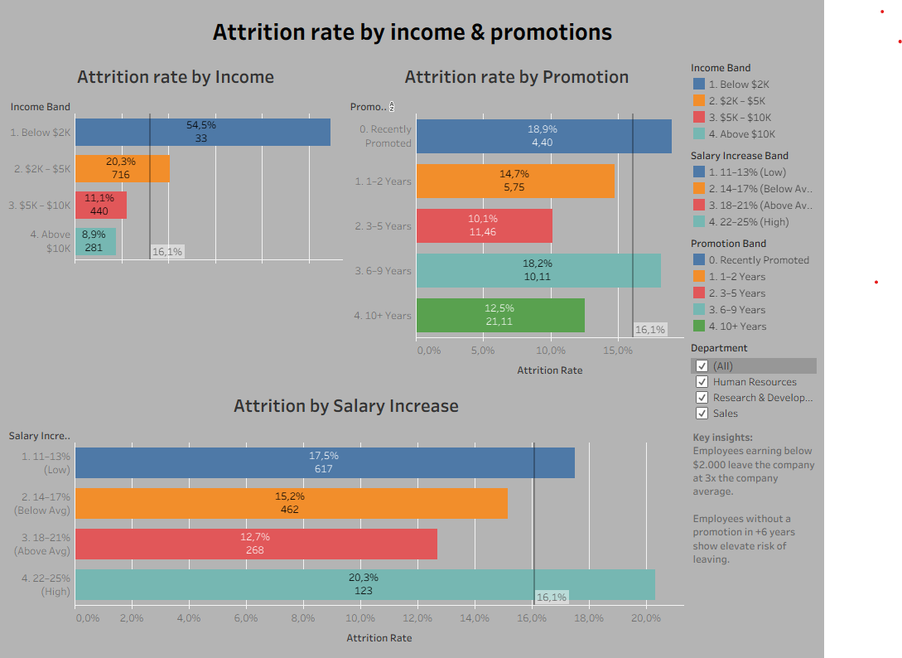

HR Analytics Dashboard
Overview
End-to-end HR analytics project built on the IBM HR Analytics Employee Attrition & Performance dataset (1,470 records, 35 features). The project covers the full data analyst workflow: ETL pipeline into Google BigQuery, SQL-based analysis, and two interactive Tableau dashboards that answer the core business question: which employees are most at risk of leaving, and what can the business do about it?
ETL Pipeline
- Ingested the IBM Attrition CSV into Google BigQuery and verified row counts, column types, and nulls
- Built
src/bq_client.pyto authenticate via a GCP service account and query BigQuery from Python - Wrote
src/etl.pyto extract the raw table into pandas, clean column names, cast types, handle nulls, and engineer new fields (tenure bands, income brackets, satisfaction tiers) - Loaded the transformed data back to BigQuery as
hr_analytics.employees_clean— the single source of truth for SQL queries and Tableau
Methodology
- Wrote SQL queries in BigQuery covering attrition by department, job role, salary band, overtime, and promotion recency
- Conducted exploratory analysis in
notebooks/01_eda.ipynbby pulling the cleaned table into pandas and visualising distributions, correlation heatmaps, and attrition breakdowns - Connected Tableau Desktop to BigQuery via the native connector; used an Extract connection for performance and offline portability
- Built a two-dashboard Tableau workbook with cross-dashboard Department filter actions and exported as a packaged
.twbxfile
Built With
 Python
Python
 BigQuery
BigQuery
 pandas
pandas
 Tableau
Tableau
 Git
Git
Dashboards
The Tableau workbook contains two dashboards, each answering a distinct business question.
- Attrition Overview: headline KPI, attrition by department and job role (with company average reference lines), and overtime vs attrition side-by-side bars. All sheets respond to a shared Department filter action.
- Financial Drivers of Attrition: attrition rate across income bands, promotion recency groups, and salary hike bands, with a high-performer attrition line overlaid to test whether raises retain top talent.
Screenshots


Results
Employees earning below $2K/month leave at roughly 3-4x the company average. Overtime workers show attrition rates above 30%, versus ~10% for those who do not work overtime. Sales Representatives have the highest attrition of any job role at ~40%. Career stagnation is a clear risk signal: attrition climbs steeply for employees 10+ years without a promotion, while income level proves a stronger predictor of leaving than raise percentage alone.